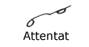

| Home Reporting A Judge’s Charge Dupraw’s Notes Sklarew’s Notes Zoubek’s Notes Pre-Anniversary Description Reference Material Brief Form List Anniversary Description Reading Material Reference Material Brief Form List Most-Used Phrases Simplified Description Brief Form List Dupraw on Note Size Diamond Jubilee Description Brief Form List Expert Brief Form List Series 90 Description Brief Form List Centennial Description Brief Form List Taquigrafía Gregg Gramálogos German Gregg Manual Esperanto Gregg Manual Brief Forms Irish Gregg Manual Gregg Group Gregg Learning Forum Ms. Letha’s SH Site Shorthand³ Omniglot's Entry Wikipedia's Entry Stenospeed Dictation Practice Andrew Owen |
35. T, D - N, M Blends T N, joined, when written rapidly, lose the angle and assume the shape of the first of the above signs. This sign is used in such words as these: The same sign, written large, represents TEM or DEM, as in
(In the last word the O is omitted under a rule to be given later.)
The vowel of the "blend" is not necessarily E, but a strongly accented vowel or a diphthong should be written in its alphabetic form. The vowel preceding the ENT, EMT blends is seldom omitted. The O hook is turned on its side before the ENT, EMT blends.  From the word Tedenz it will be seen that in some words either blend might be used. In such words, the TEN, TEM blends must be used. These four blends are always written upwards. 36. The PEND Blend The present participles of verbs should be written with the ENT blend. P-END join without an angle. The PEND blend is also used for CHEND. 37. The DEF Blend D and F when joined are written without an angle, and the blend represents the syllables: TIV, DEF, DIV, DEV. 38. The MEM Blends The syllables MEM
and MEN are represented by M lengthened.
The vowel of the syllable is not confined to e, as the
above examples show. 39. The DET and SES Blends The syllables DET, DED are expressed by D lengthened. The two forms of S joined represent SES or SIS; after a circle it is not necessarily to write the first S as its presence is clear from the direction of the second S. 40. The CON- and COM- Prefixes K represents the syllables COM, CON (KOM, KON) when this is followed by a consonant; when it is followed by a vowel it is represented by KM or KN as the case may be. 41. Word-Signs The above are a few word-signs employing the blends. - Next Page - |


|
Preface About Gregg Shorthand Editor's Note A Talk with the Beginner The Alphabet Chapter I Unit 1 Unit 2 Unit 3 Chapter II Unit 4 Unit 5 Unit 6 Chapter III Unit 7 Unit 8 Unit 9 Chapter IV Unit 10 Unit 11 Unit 12 Chapter V Unit 13 Unit 14 Unit 15 Chapter VI Unit 16 Unit 17 Unit 18 Chapter VII /n Unit 19 /n Unit 20 Unit 21 Chapter VIII Unit 22 Unit 23 Unit 24 Chapter IX Unit 25 Unit 26 Unit 27 Chapter X Unit 28 Unit 29 Unit 30 Chapter XI Unit 31 Unit 32 Unit 33 Chapter XII Unit 34 Unit 35 Unit 36 |